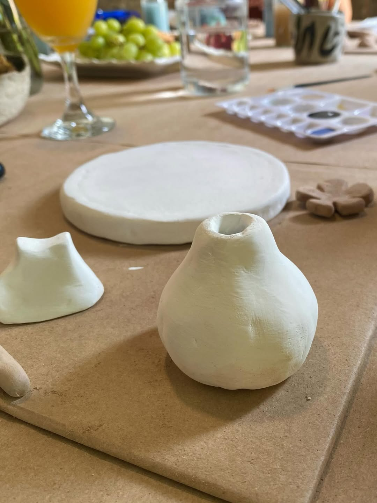
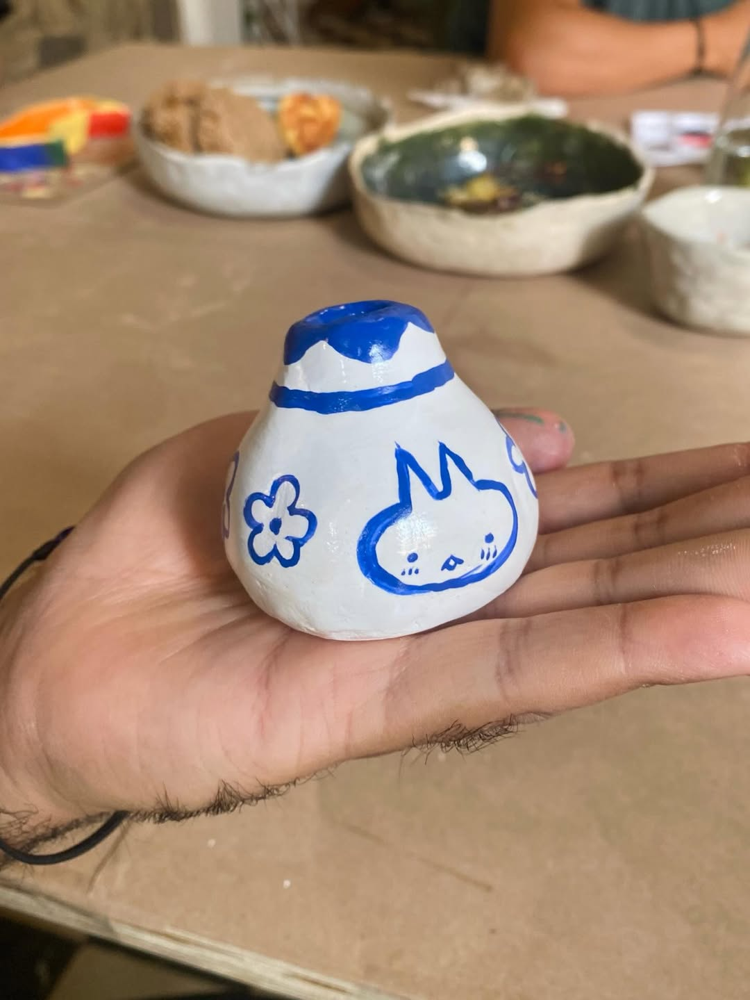
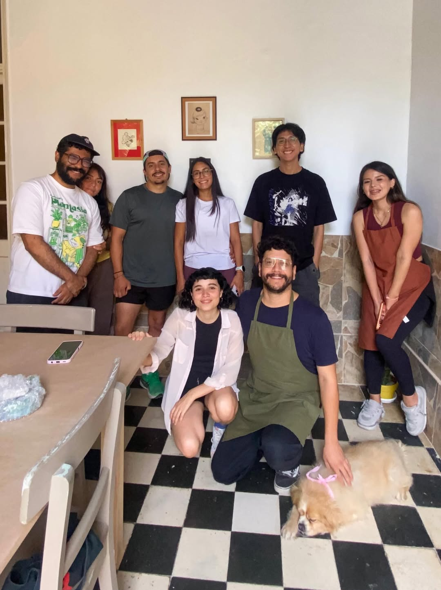

Gato Miel Estudio / Talleres / Iniciación
Taller Inicial
de Cerámica
Un primer encuentro con el barro, la calma y tu creatividad.
Conecta con el barro
y tu creatividad
Este taller está pensado para quienes desean comenzar desde cero. Aprenderás técnicas básicas de modelado, creación de piezas artesanales y fundamentos esenciales de la cerámica.
- Materiales incluidos
- Quema de piezas
- Guía personalizada
- Ambiente creativo y comunitario
$45
Reservar plaza
4 encuentros · 2 horas cada uno

Momentos del taller
02 / Galería

Vive la experiencia
03 / VideoCada sesión es un espacio para desconectarte del ruido y reconectar con algo lento, táctil y presente. El barro no tiene prisa — y en ese tiempo suspendido, algo cambia.